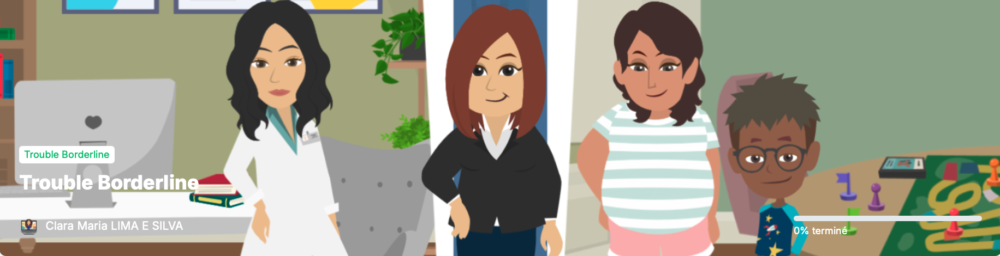

Bonjour Pierre ! 👋
Reprenez votre parcours là où vous l'avez laissé
45%
Progression
3h 15min
Temps passé
Programme validé par votre équipe soignante
Ce programme a été sélectionné spécifiquement pour vous accompagner dans votre parcours de santé.
Mon programme actuel

Santé mentale
Trouble Borderline
Comprendre et gérer les émotions : outils pratiques et stratégies d'adaptation
Votre progression
45%
5 modules sur 10 complétés
10 modules
~5 heures
Certificat inclus
Validé CH Perrens
Contenu du programme
Module 1 : Introduction au trouble borderline
Terminé
Module 2 : Comprendre les émotions
Terminé
Module 3 : La régulation émotionnelle
Terminé
Module 4 : Les relations interpersonnelles
Terminé
Module 5 : Techniques de pleine conscience
Terminé
Module 6 : Gestion du stress et de l'anxiété
60% complété
En cours
Continuer
Module 7 : La tolérance à la détresse
Verrouillé
Module 8 : Construire une vie qui vaut la peine
Verrouillé
Module 9 : Prévention des rechutes
Verrouillé
Module 10 : Bilan et perspectives
Verrouillé
Ressources complémentaires
Guide pratique - Exercices quotidiens
Document PDF à télécharger avec des exercices pratiques
Télécharger (2.5 MB)Une question sur votre programme ?
N'hésitez pas à en parler avec votre équipe soignante ou à nous contacter pour toute question technique.